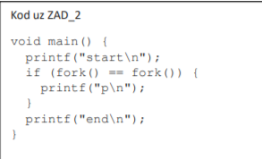
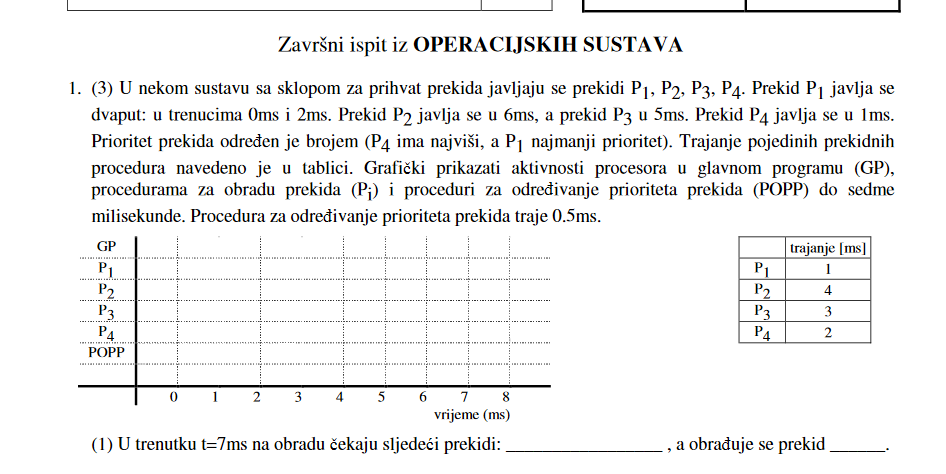
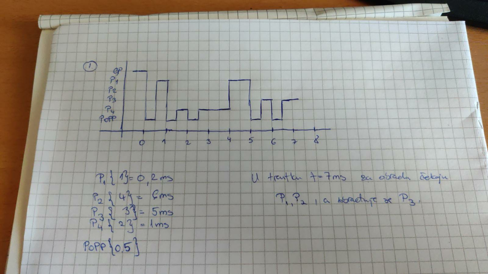
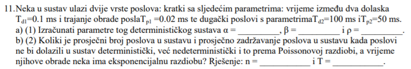

Jel može netko objasniti ono crtanje usmjerenog grafa za sustav zadataka. Nigdje ne vidim da ima s postupkom zašto i kako se to radi.
H(x) never mind, kliknulo mi je
Za debile poput mene, u istom redu D+D→ok paralelno, nezavisni K+D→zavisni, ne može paralelno K+K→zavisni, ne može paralelno Ostalo: ok paralelno
može netko objasniti kako se ovaj tip zadataka rješava 
krampus Ako je pitanje što će se ispisati, moraš znati što fork radi i interpretirati C kod u glavi 😛
krampus nacrtaš binarno stablo koje predstavlja tok izvršavanja programa, svaki poziv funkcije fork je očito jedno grananje.
Prvi zad iz zi1:

Jel može netko pomoć i vidit jel ovo dobro rj 
Mason Mount me Ja sam isto tako rijesila.
Zna li netko ovaj zadatak? Ja ga rjesavam pa dobivam 981/s za betu sto je vise od 10 puta manje od suma alfi.
